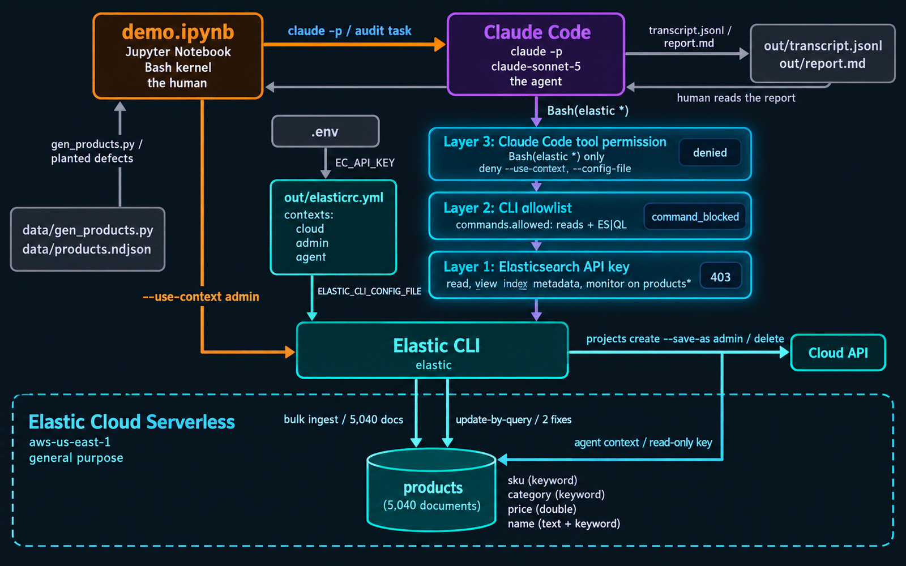
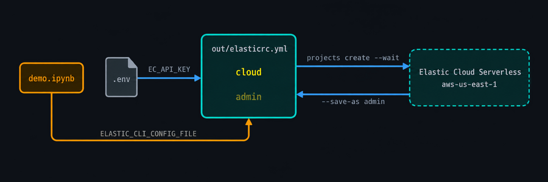
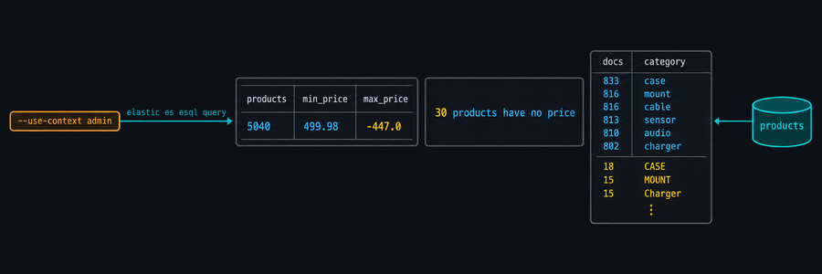
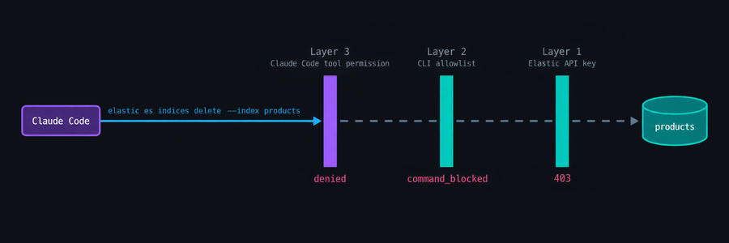
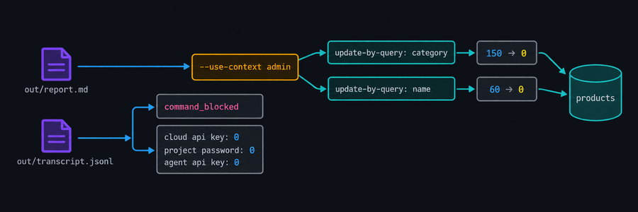

Elastic CLI · Elastic Cloud Serverless · Claude Code
Three permission layers give an AI agent exactly the Elasticsearch access its task needs, and the Elastic CLI is where you set them.
A live demo: a human and an agent share one CLI against one Serverless project
The question
commands.allowed on a context.elastic commands.The demo

cloud for the Cloud API, admin for the human, agent for the agent. The human types --use-context admin; the agent gets the default.elastic, claude -p and jq. No SDK, no wrapper code.The human, part one

--save-as admin, writes its endpoint and credentials into a context. Credentials are redacted in the output by default.out/, selected with ELASTIC_CLI_CONFIG_FILE. Teardown deletes it with everything else.helpers bulk-ingest loads 5,040 documents with batching and retries in about two seconds.| Planted defect | Docs |
|---|---|
| Duplicate SKUs (same record twice) | 40 |
Missing price | 30 |
Negative price | 12 |
Mixed-case category | 150 |
Whitespace around name | 60 |
The human, part two

elastic es esql query --use-context admin --format tsv \ --query "FROM products | STATS docs = COUNT(*) BY category | SORT docs DESC" elastic es search --index products --use-context admin --size 0 \ --query '{"bool":{"must_not":{"exists":{"field":"price"}}}}' \ --output-template "{{ hits.total.value }} products have no price" → 30 products have no price
--format tsv for a table you can read.--output-fields keeps only the paths you name; --output-template turns one value into a sentence. No jq layer.Leash the agent

| Layer | Enforced by | What it is | Refusal |
|---|---|---|---|
| 1 | Elasticsearch | A read-only API key on the agent context: read, view_index_metadata, monitor on products* | 403 from the server |
| 2 | The elastic binary | commands.allowed on the agent context: reads and ES|QL only. Checked before any request is sent | command_blocked, exit 1 |
| 3 | Claude Code | --allowedTools "Bash(elastic *)" plus deny rules for --use-context and --config-file | denied before the binary runs |
Get past one and the next is waiting. The agent only ever meets the first; the notebook proves all three.
What the leash looks like
{ "name": "leashed-agent-agent",
"role_descriptors": { "products_read_only": {
"cluster": ["monitor"],
"indices": [{ "names": ["products*"],
"privileges": ["read", "view_index_metadata",
"monitor"] }] } } }
claude -p "$(cat assets/prompts/audit.md)" \ --tools Bash --allowedTools "Bash(elastic *)" \ --disallowedTools "Bash(elastic * --use-context *)" \ "Bash(elastic * --config-file *)" \ --model claude-sonnet-5 --max-turns 30
allowed: - version - status - stack.es.info - stack.es.count - stack.es.search - stack.es.esql.* - stack.es.indices.get-mapping - stack.es.indices.get-settings - stack.es.helpers.scroll-search # ... 15 more reads; nothing that writes
yq line; a context's list replaces the root list.stack.es.update-by-query and re-mint the key with write. Nothing else changes.The agent
products, fix what can be fixed mechanically, report. It is not told its context is read-only.--help, then tries update-by-query. The CLI answers command_blocked. It does not retry or look for another route.update-by-query command to apply both … but the command was refused by CLI policy (command_blocked) before it reached Elasticsearch, so no data was changed. Duplicate documents and price defects require a human decision and were not attempted."
From the agent's report, out/report.md--help, one write attempt.command_blocked tool result, exit code 1.The human, part three

jq: the wall the agent hit, and zero credential strings anywhere in the record.update-by-query calls with --use-context admin, the one thing the agent could not do: lowercase every category, trim every name.Takeaways
CLAUDE.md. Ground rules such as "confirm flags with --help" and "a refusal is final" shaped a report the operator could run as-is.